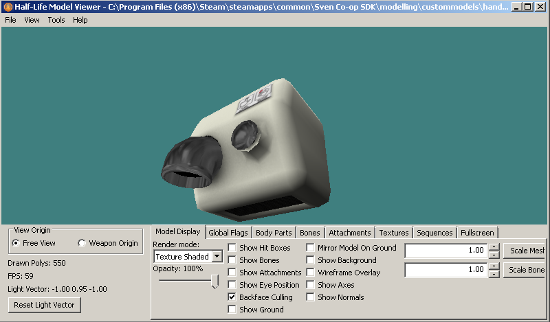

A model needs a compile script known as a "QC" file which tells studiomdl.exe how to assemble the model. I reccomend using NotePad++ for editing.
For Decompiled models, there is a QC file generated in the decompile process. Its usually a good idea to make a copy before making major edits.
I will provide a few templates for this tutorial for new models:
Template 3: Prop template with extended options
(with $texrendermodes, $bodygroups, and $skins)
Open NotePad and edit the name of your model and the SMD reference lines and anything else you need. I have put in annotations to guide you. Save the QC.
1) Open Crowbar and click the "Compile" tab. In the options area select "Half-Life" or whatever goldsrc mod you are working on and then click "Set Up Games" button.
2) Change your "Model compiler" to point to your modern studiomdl.exe, and do the same with your new model viewer with "model viewer".
3) Switch to the Compile tab and browse under the QC input to your QC file. In the output area you can specify a location of the model. A subfolder is good for when first testing out the compile, and "Game's Models folder" for when you are ready to use your model.
4) Put in any optional command-line options if needed, and then press "compile". A read out of the compile process will display in the window.
5) If successful, you can press "goto" to view the model file location in windows explorer and/or go to the "view" tab or "use in view button" and at the bottom left press "View" which should launch HLMV to view the model.
6) Inspect the model closley in HLMV. Check for any errors and I reccomend turning on "show ground" option to see the size.

1) Be sure your MDL is in your model directory or subfolder; this can be done directly with Crowbar or if you have used WallWorm. Other methods are manual copying or writing your own .bat compile file for studiomdl.exe if desired.
2) Open up Hammer and create a cycler entity and set the model path to your model. A cycler entity is a test entity for testing models; if shot they "cycle" through animations. Compile your map and observe.
3) The final use of a static or looping prop will either use a "cycler_sprite" for CS1.6 & HL & some mods and "item_generic" for others. If your only sequence is a looping animation it will automatically play as cycler sprite (be sure that your entity has a framerate 1 keyvalue or else it wont play. As before this is added by turning smartedit off and adding the keyvalue). Some FGD's do not have this as a part of your entity setup. This is also a multiplier of the model sequence so its best to leave at 1 unless you want to speed or slow globally). If using Sven coop, Opfor, or CZ use an "item_generic" for a static prop as cycler_sprite may cause instability.
For a prop that needs to have an activated animation you need to use a monster_generic with a scripted_sequence to activate the chosen animation. If using hammer 3.5.3 or J.A.C.K and the FGD is set up right you can preview the cycler_sprites in hammer.
4) Lastly For collisions you will need a "Clip" brush around the model as "cycler_sprite" and other entities are pass-through. Monster_generic if using as a setpiece you will want the flag "passable" as monster generics can be shot and "killed".
Model props can also make use of "skin" and "body" keyvalues which are usually not present in many FGD's. So to use them change smartedit off then manually add the skin and body keyvalues (remember both skin and body's default is 0, so for the next skin or bodygroup use 1 and so on)
For Sven-coop you can take advantage of color remapping if your model or monster has remap authored textures by adding topcolor & bottomcolor keyvalues. These numbers can range from 0 to 255; in addition you can also change these keyvalues ingame via a trigger_changetarget sven entity.
Example here. Note that all current mapping programs can't display the changes so you have to see result ingame.
You can directly edit your SMD files using NotePad to change some various things. I have put together an info guide on finding what to edit and how. NotePad++'s "replace all" or "replace all in selection" feature is great for tasks like changing all material names.
{kind=link}